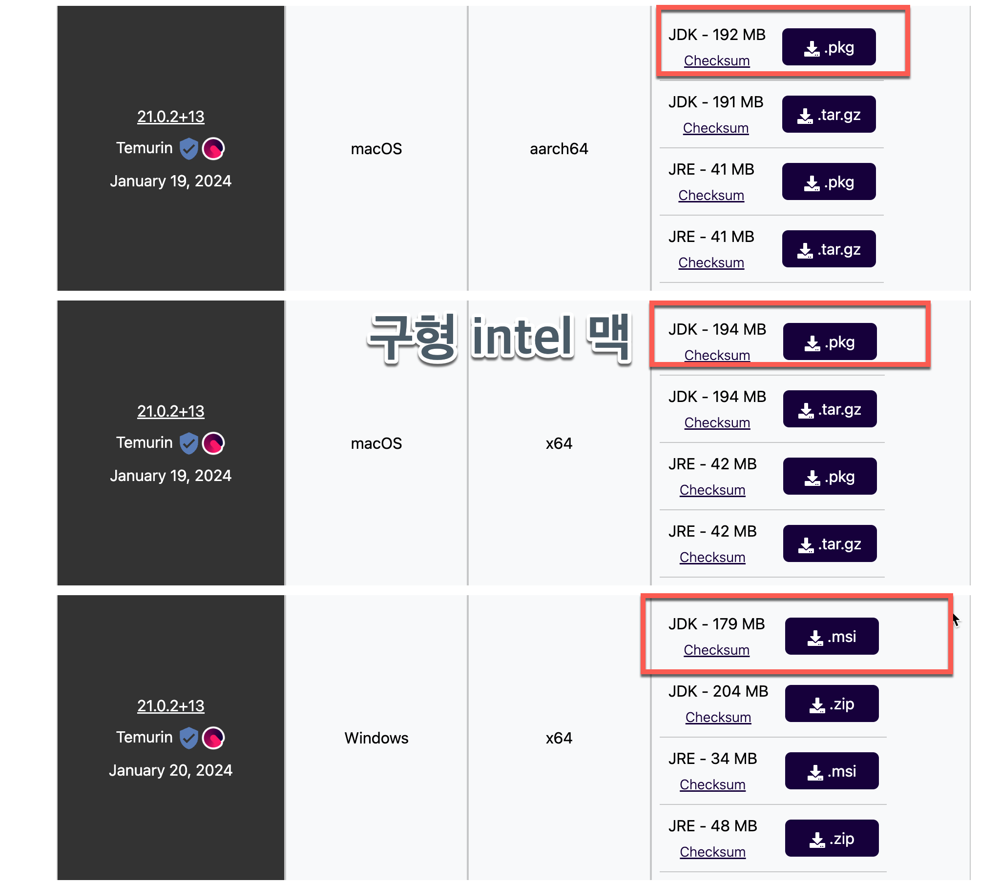

즐거운 자바¶
강경미(carami@nate.com), 김성박 (urstory@gmail.com)¶
JAVA언어의 특징과 JDK 설치¶
자바 프로그래밍을 공부하는 이유?¶
- 기업에서 서버 프로그래밍시 가장 많이 사용하는 언어
자바 언어의 특징¶
- 객체지향 언어
- 자바 언어는 느리지만, 버전업 되면서 다른 언어들의 장점들을 흡수하고 있다. (모던 자바)
- 람다(Lambda) : 함수형 프로그래밍
- Stream API : 람다 표현식과 메서드 참조 등의 기능과 결합해서 매우 복잡하고 어려운 데이터 처리 작업을 쉽게 조회하고 필터링하고 변환하고 처리할 수 있도록 한다.
- 병렬 프로그래밍 : 여러개의 CPU코어에서 작업을 배분해서 동시에 작업을 수행한다.
자바 프로그램 작성과 실행¶
- JDK(Java Development Kit)이라는 프로그램을 다운로드하고 설치해야한다.
- 여러 종류의 JDK가 존재한다. openjdk, Oracle JDK, Azul Julu JDK, Amazon Corretto OpenJDK, Adoptium Temurin 등
- 이클립스 재단(The Eclipse Foundation)의 어댑티움(Adoptium) 프로젝트가 ‘이클립스 테무린(Eclipse Temurin) 자바 SE 바이너리’의 첫 번째 릴리즈를 출시했다. 이는 인텔 64비트 프로세서 기반 윈도우, 리눅스, 맥OS용 자바 SE 8, 자바 SE 11, 자바 SE 16의 최신 버전을 다루는 오픈JDK(OpenJDK)의 ‘프로덕션 레디(production-ready)’ 빌드다.
Git 설치¶
- Git 설치 후 다음의 내용을 설정한다.
git config --global user.name "이름"
git config --global user.email 이메일
git config --global core.autocrlf true
JDK 21 설치¶
- 초보자가 공부할 때는 JDK 8도 충분. 서비스 업체들의 경우 11이상을 사용하는 경우가 많다.
- JDK 21을 고려하는 경우
- Java 17이 2023년 9월 출시.
- 10부터는 6개월마다 출시. LTS(Long Term Support)버전은 3년마다 출시.
- JDK8 LTS가 JDK11 LTS보다 유지보수 기간이 더 길다.
- JDK 17 vs JDK 21 - JDK 21의 유지보수 기간이 더 길다.
- https://adoptium.net/

JDK 21 설치¶
- 윈도우 사용자는 msi파일을, 맥 사용자는 pkg파일을 다운로드한다.
- msi파일 또는 pkg파일을 실행하여 설치한다.
JDK 21 설정/설치 - Mac사용자¶
- 터미널에서
echo $0이라고 명령한다. - zsh라고 나올 경우
code ~/.zshrc명령을 수행한다. - bash라고 나올 경우
code ~/.bashrc명령을 수행한다. - 파일을 열었으면 마지막 줄에 다음을 추가한다.
export JAVA_HOME=$(/usr/libexec/java_home -v 11)
export PATH=$PATH:$JAVA_HOME/bin
JDK 21 설정/설치 - Mac사용자¶
- 터미널을 종료하고 재시작한다. 다음과 같이 명령한다.
java --version
javac -version
JDK 21 설치 - 윈도우 사용자¶
구글에서 "Windows JAVA_HOME PATH 환경변수 설정" 이라고 검색해보자.
https://vmpo.tistory.com/6
자바 프로그램 작성과 실행¶
- 터미널에서 특정 디렉토리로 이동한다. (소스가 저장될 디렉토리)
code Hello.java을 실행한 후 아래와 같이 저장한다.
public class Hello{
public static void main(String[] args){
System.out.println("Hello");
}
}
자바 프로그램 작성과 실행¶
- java 컴파일러 javac명령으로 hello.java를 컴파일 한다.
javac Hello.java - 컴파일이 성공하면 오류메시지가 없이
Hello.class파일이 생성된다. ls -la명령으로 파일이 생성되었는지 확인한다.- JVM(자바 가상 머신)으로
Hello.class를 실행한다. java명령이 JVM을 의미한다. 이 때 확장자는 입력하지 않는다.java Hello